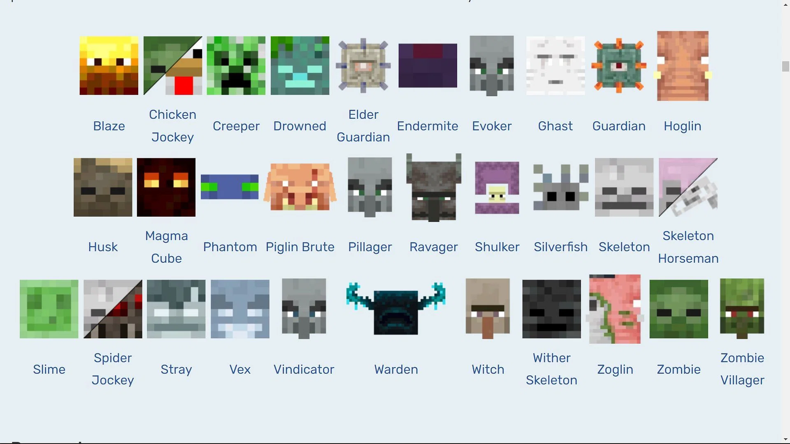

About the mobs
There is an estimate of 31 mobs in Minecraft. While some mobs can be small and harmless, others are potentially dangerous. Some mobs can spawn depending on the location you are in. Mobs such as the skeletons, creepers and spiders are typically found regardless of the location. The hardest mob to locate are the Wardens as they are in the “Ancient City.” Other mobs are found in different portals.
Passive Mobs

There are various non hostile mobs, or passive mobs, such as the axolotl, cow, fish, sniffer, wandering trader, sheep, rabbit, skeleton horse, strider and many more. These passive mobs are generally used as a food source and transportation; take advantage of these sources. Although the majority of these mobs are present in the regular world, the strider can be found in the nether.
Hostile Mobs
There are numerous hostile mobs you must look out for. As mentioned earlier, the skeletons, creepers and spiders regularly spawn in and are rather hostile. Entities such as the Warden and the Wither are rather difficult to discover although. Be sure to take advantage over available resources to conquer these enemies!